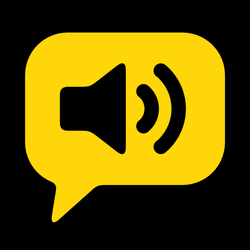

SayKeys
Text to Speech AAC
SayKeys gives you a voice when you can't speak. Type a few letters, tap Speak, and your iPhone or iPad says it out loud, clearly and right away. It's made for adults who can't speak, or can't be understood, but can still type: after a stroke or throat surgery, with a tracheostomy, or with ALS/MND, Parkinson's, MS or a brain injury.
- Big, high-contrast keys: bright yellow on black. Only the keys you need, so the keys are bigger.
- Opens straight to the keyboard. No sign-in, no setup.
- Suggestions forgive spelling slips and learn the words you use most.
- Your choice of voice: free built-in Apple voices, or connect your own ElevenLabs account for lifelike ElevenLabs voices.
- Works offline and stays private. With the built-in voices, what you type never leaves your device. With ElevenLabs connected, the text you speak is sent to ElevenLabs to create the audio.
- Pay once. No subscription, no in-app purchases, no ads.
SayKeys is a communication tool, not a medical device.
Help
Support and FAQ · Privacy Policy · Email travisboatman@carbonated.com